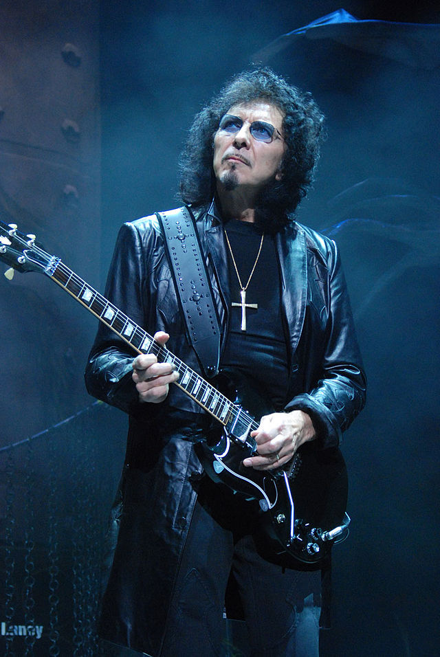

David Gilmour

Es un músico, compositor y multiinstrumentista británico. Es conocido por haber sido vocalista,
guitarrista y uno de los compositores de la banda de rock progresivo Pink Floyd.
Tony Iommi

Es un músico y compositor británico, reconocido por haber sido uno de los fundadores de la banda de heavy metal
Black Sabbath, y el único miembro fundador que estuvo presente en todos los álbumes de la misma. Es considerado uno de los guitarristas
más importantes e influyentes en la historia del rock y el padre de muchos de los riffs utilizados en el hard rock y el heavy metal.
Synyster Gates
Es un guitarrista estadounidense conocido por ser el guitarrista líder y corista de la banda de Heavy metal, Avenged Sevenfold.
Es hijo del famoso guitarrista y compositor Brian Haner. También fue el guitarrista de la banda de su mejor amigo (The Rev) Pinkly Smooth en 2001.